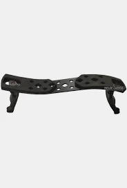
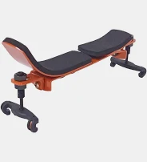

Espaleiras premium desenvolvidas para unir conforto, estabilidade e sofisticação em cada apresentação.
Vendas somente para lojistas!

Sofisticação premium em alumínio preto.

Conforto anatômico com encaixe preciso.
A Lunnon desenvolve acessórios para violinistas que buscam conforto, estabilidade e acabamento refinado. Cada espaleira é projetada para proporcionar uma experiência elegante e segura durante os estudos e apresentações.